다롄 여행 첫날, 도심을 걸었던 오전(①편)을 지나 오후에는 완전히 결이 다른 코스로 방향을 틀었습니다. 운하 위로 곤돌라가 떠다니는 동방수성(东方水城)에서 시작해, 바다 쪽 해변 데크에서 갈매기에게 먹이를 주며 노을을 보고, 밤에는 다롄 라오제(大连老街) 실내 해선 야시장에서 홍합·양꼬치·백주로 하루를 마무리하는 흐름이었어요. 한나절 안에 '유럽풍 테마파크 → 바닷가 산책 → 로컬 야시장'을 한 줄로 엮으니, 다롄이라는 도시가 가진 여러 얼굴을 짧게 압축해서 본 느낌이었습니다. 이 글에는 제가 실제로 다닌 동선과 이동 방법, 야시장에서 쓴 돈, 챙기면 좋은 현지 팁까지 처음 가는 분이 궁금해할 만한 걸 정직하게 정리해 뒀습니다. 확인하지 못한 부분은 지어내지 않고 '확인 필요'로 남겨둘게요.
첫날 오후 코스는 동방수성 → 해변 데크(갈매기 먹이주기·노을) → 라오제 야시장 → 숙소 순서였습니다. 세 곳 다 성격이 뚜렷하게 달라서, 낮의 화사한 운하 산책으로 시작해 해 질 무렵 바다에서 한 박자 쉬고, 어두워지면 야시장에서 저녁 겸 야식을 먹는 흐름이 자연스러웠어요. 오후에 시작해 밤까지 이어지는 반나절 일정으로 부담이 없었습니다.
이동은 다롄 시내 대중교통을 이용했습니다. 다롄은 지하철과 버스를 QR코드로 승차·결제할 수 있고, 도시의 명물인 노면전차(有轨电车) 트램도 다녀서, 알리페이·위챗페이를 미리 세팅해 두면 현금 없이 다니기 편했어요. 저는 여권과 해외카드를 결제앱에 등록해두고 다녔는데, 유니온페이 계열 카드가 수수료 면에서 유리하다고 해서 참고했습니다. 다만 동방수성·라오제 야시장의 정확한 지하철역·버스 노선과 도보 소요 시간은 제가 기록해두지 않아 이 글에서 단정하지 않겠습니다. 정확한 경로는 방문 전 지도앱(바이두 지도 등)에서 그날 위치 기준으로 확인하시는 게 안전해요. 한 가지 분명한 건, 동방수성에서 바다 쪽으로 걸어 나오면 해변 데크와 해산물 식당 거리가 이어져서, 이 두 곳은 도보로 묶어 다니기 좋았다는 점입니다.
입구에 들어서자마자 유럽풍 석조 건물과 표지가 반겨주더라고요. 동방수성은 이름 그대로 '동방의 물의 도시', 베네치아를 콘셉트로 만든 운하 테마파크입니다. 돌바닥과 아치형 다리, 알록달록한 건물 색이 정말로 이탈리아 소도시를 옮겨온 것 같았어요. 다롄 도심에 있다가 문 하나 지났을 뿐인데 분위기가 확 바뀌니, 순간이동한 기분이 들 정도였습니다.
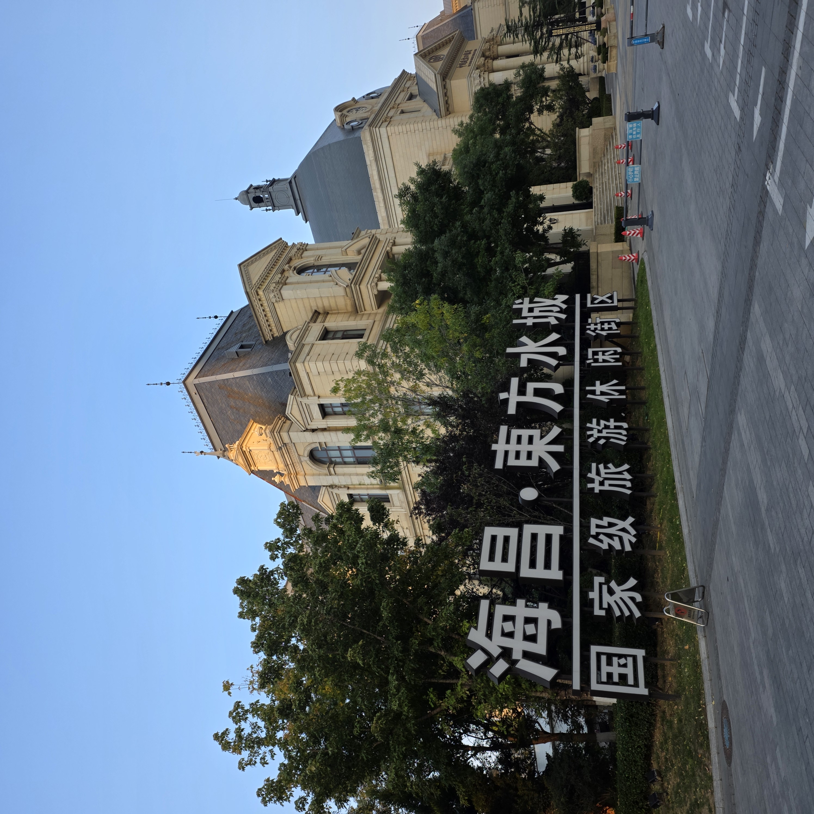
가장 눈길을 끈 건 역시 운하 위를 오가는 곤돌라였습니다. 빨간 옷을 입은 사공이 긴 노를 저으며 물길을 가르는데, 그 장면 하나로 이곳의 콘셉트가 완성되더라고요. 물 위에 건물 그림자가 잔잔하게 비쳐서 한참을 서서 구경했습니다. 참고로 운하변 산책은 자유롭게 둘러볼 수 있었지만, 곤돌라 탑승 자체가 유료인지·요금이 얼마인지는 제가 직접 타보지 않아 확인하지 못했습니다. 탑승을 계획한다면 현장 매표나 공식 안내로 확인하세요.
운하 한쪽에는 베네치아 산마르코 광장의 캄파닐레를 닮은 붉은 종탑이 우뚝 서 있었습니다. 벽돌색 탑이 파란 하늘과 대비되니 사진이 정말 잘 나오더라고요. 이런 랜드마크형 건물이 곳곳에 있어서 걷는 내내 눈이 즐거웠습니다. 사진 욕심이 있다면 이 탑 앞이 인증샷 명당이었어요.
운하변을 따라 걷다 보면 파스텔 톤 카페와 곤돌라 선착장도 나옵니다. 무지개색 건물들이 물가에 줄지어 있어서, 어느 각도로 찍어도 그림엽서 같았어요. 걷다가 다리가 뻐근해질 즈음 잠시 앉아 커피 한 잔 하기에도 분위기가 좋았습니다.
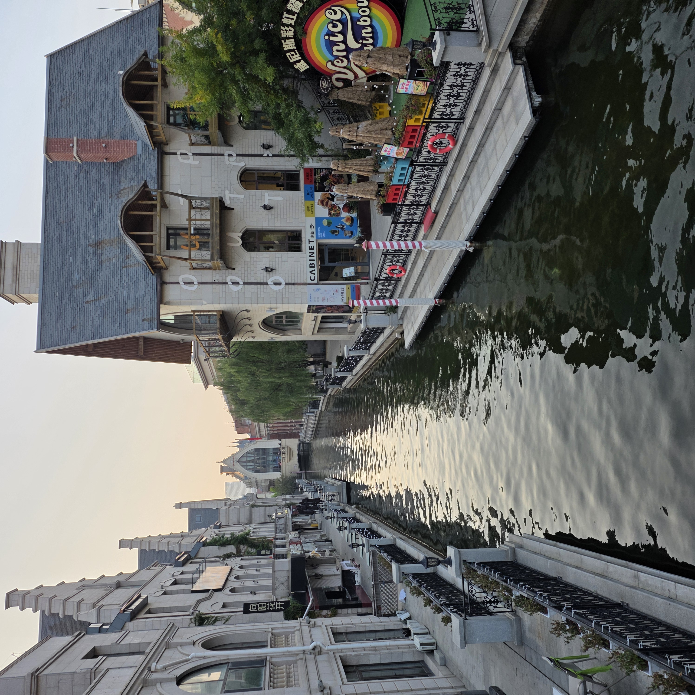
해가 슬슬 기울자 시계탑과 첨탑이 물길에 반영되면서 분위기가 또 달라졌습니다. 낮의 화사함과는 다른, 살짝 노스탤직한 유럽 저녁 골목 같은 느낌이었어요. 같은 장소인데 시간대에 따라 표정이 이렇게 다르구나 싶어서, 오후 늦게 들른 게 오히려 잘한 선택이었다 싶었습니다.
나오는 길에는 다롄 기념품숍도 들렀습니다. '浪漫之都(낭만의 도시)'라고 적힌 다롄 굿즈와 에코백이 아기자기하게 진열돼 있었어요. 여행 기념으로 하나쯤 사기 좋은 아이템들이라, 구경만 해도 소소하게 재밌었습니다. 동방수성은 이렇게 '걷고 보고 사진 찍는' 재미가 확실한 곳이라, 곤돌라를 안 타도 충분히 즐길 만했어요.
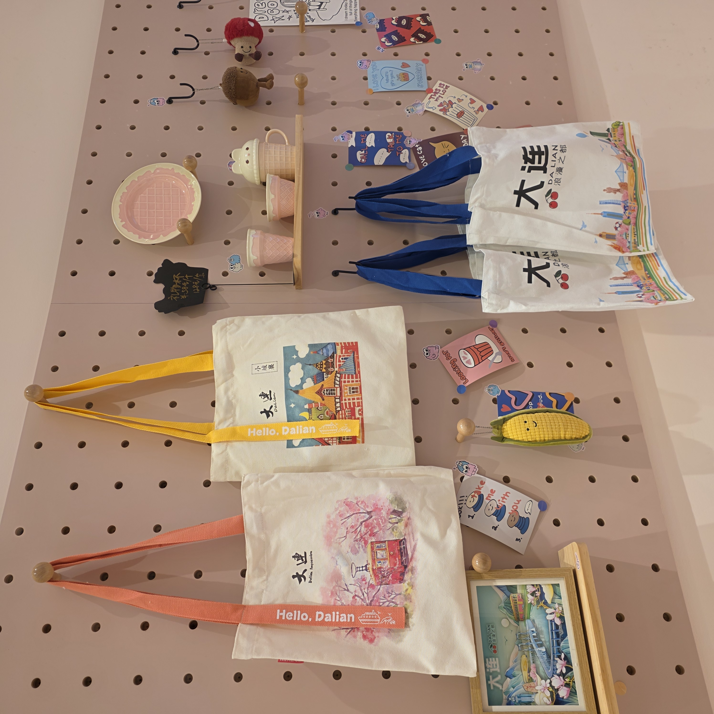
동방수성을 나와 바다 쪽으로 이동했습니다. 해변으로 가는 길목에는 해담물만두(海胆水饺·성게 물만두)를 파는 식당 거리가 이어져 있었어요. 다롄이 해산물의 도시답게, 걷기만 해도 간판이 죄다 바다 냄새를 풍기더라고요. 저는 이날 저녁을 야시장에서 먹기로 정해둬서 지나쳤지만, 성게 물만두는 다롄 로컬 별미라 다음에 오면 꼭 먹어보고 싶은 메뉴로 찍어뒀습니다.
해변 데크에 도착하니 갈매기 떼가 사람 손 가까이까지 날아들었습니다. 먹이를 손에 들고 있으면 갈매기가 바로 앞에서 낚아채 가는데, 생각보다 스릴 있고 재밌더라고요. 옆에서 아이와 아빠가 함께 먹이를 주며 신나 하던 장면이 오래 기억에 남습니다. 아이 동반 가족이라면 특히 좋아할 만한 즉석 액티비티였어요.
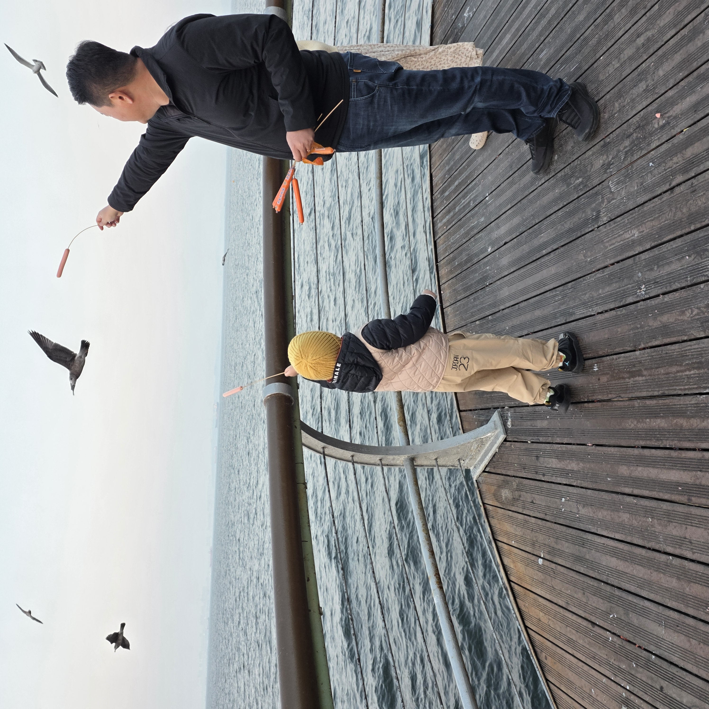
먹이주기를 마치고 해변 산책로를 따라 걸으니 노을이 바다 위로 번지기 시작했습니다. 갈매기들이 노을 진 하늘을 배경으로 날아다니는데, 하루의 피로가 싹 풀리는 풍경이었어요. 저녁 야시장으로 넘어가기 전, 딱 좋은 쉼표 같은 시간이었습니다. 다만 10월 다롄의 바닷바람은 해가 지자 확 차가워져서, 이 무렵부터 겉옷을 챙겨 입었어요.
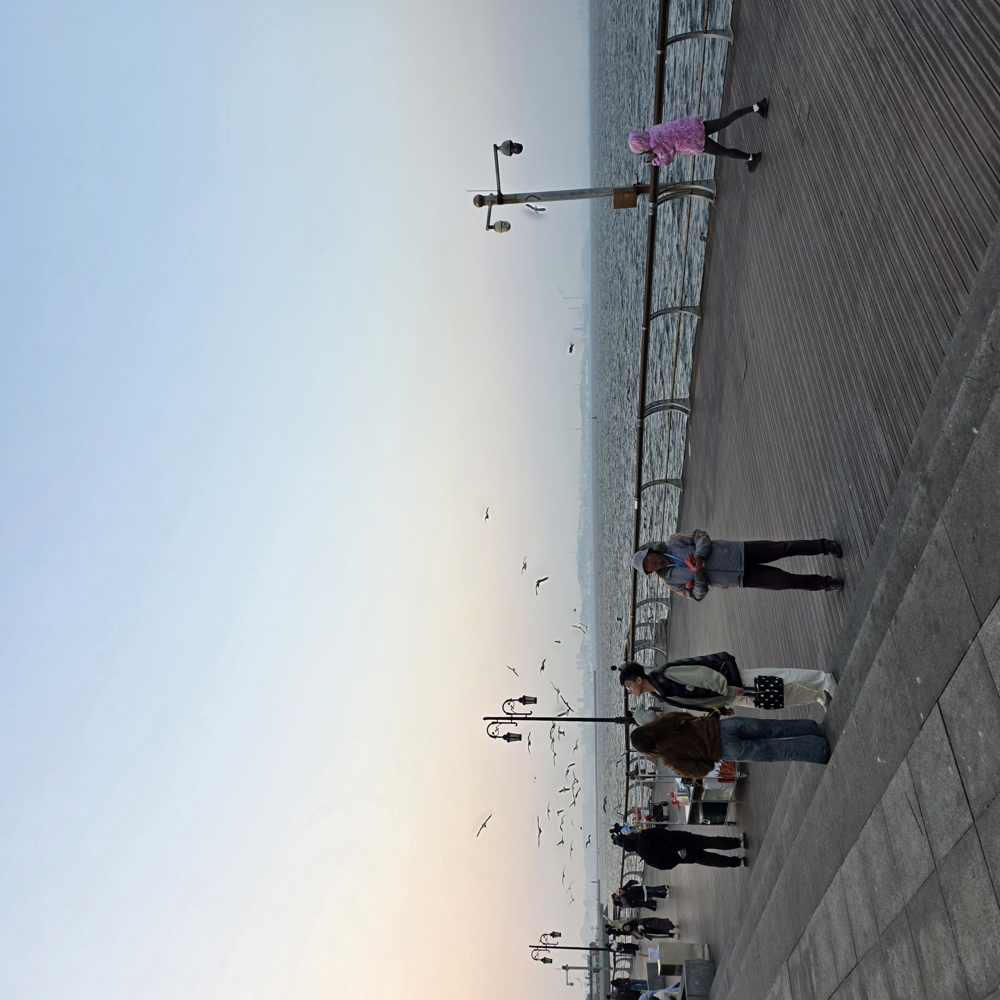
밤이 되자 오늘의 하이라이트, 다롄 라오제(大连老街) 실내 해선 야시장으로 향했습니다. 입구부터 해산물 식당의 활어 수조가 쭉 늘어서 있는데, 살아있는 생선·조개·게가 헤엄치고 저마다 가격표가 붙어 있었어요. 그날그날 시세로 파는 방식이라, 사서 먹지 않아도 구경하는 재미가 쏠쏠했습니다. 눈으로 재료를 확인하고 고르는 구조라 신선도 걱정이 덜했어요.
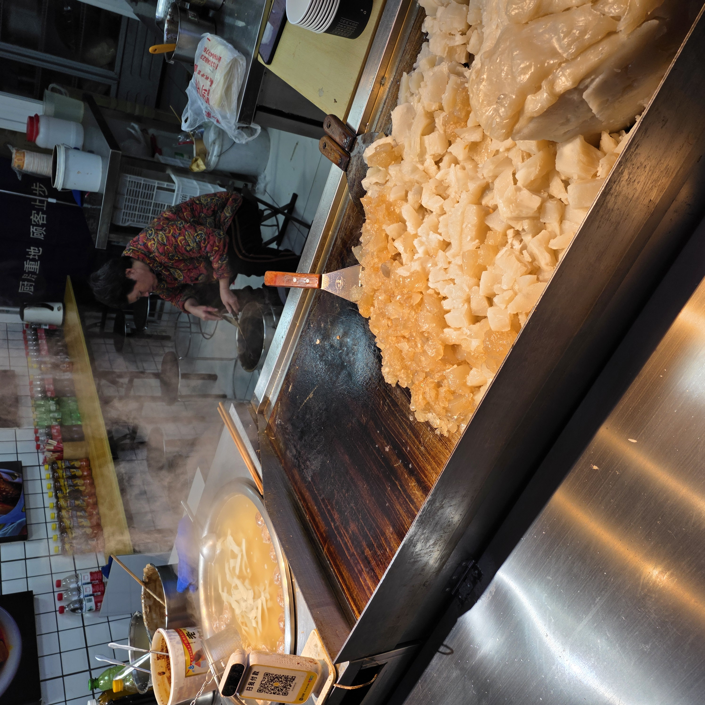
먹자거리 초입에는 홍패루(붉은 패방) 입구가 야경으로 빛나고 있었습니다. '大连老街'라고 크게 쓰인 문을 지나면 본격적인 야시장이 시작돼요. 붉은 조명과 인파, 음식 냄새가 뒤섞여 그야말로 축제 분위기였습니다. 이 문 자체가 포토존이라, 야시장에 들어가기 전 사진 한 장은 꼭 남기게 되더라고요.
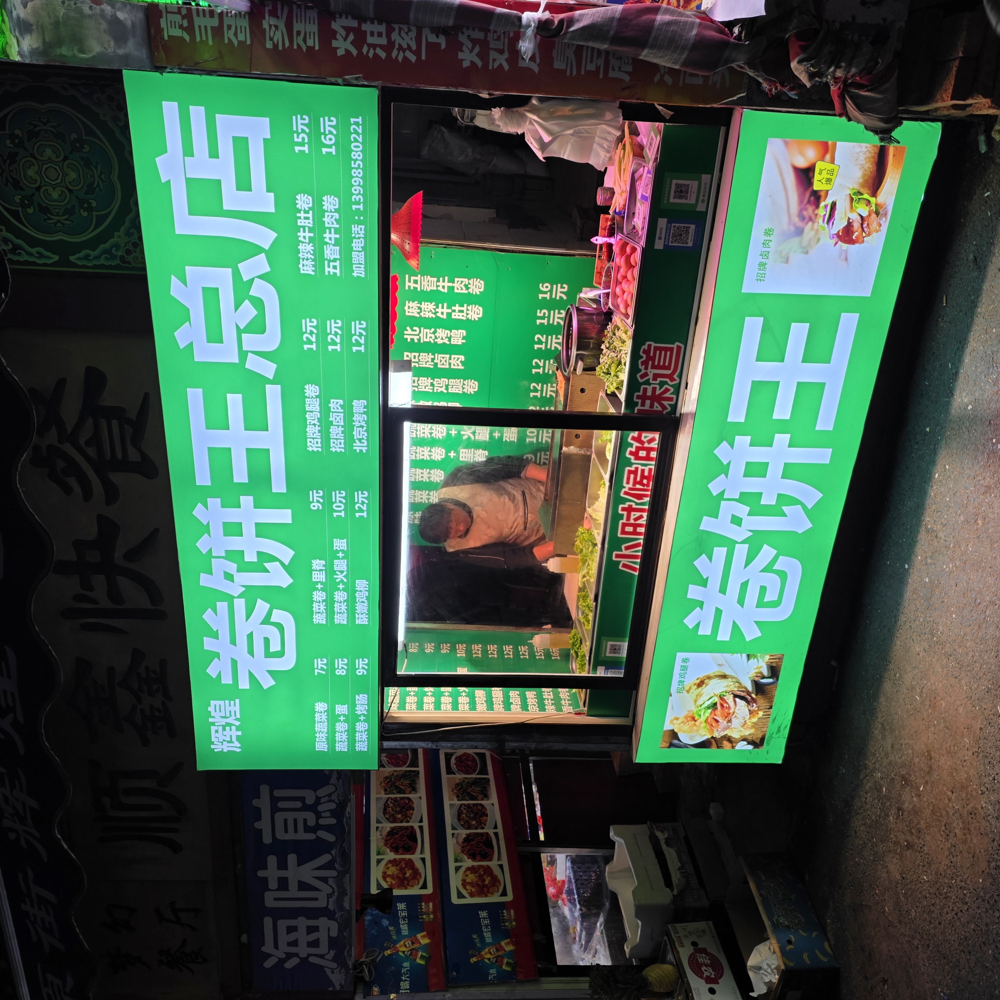
안으로 들어서니 노점이 끝없이 이어졌습니다. 쥐안빙왕(卷饼王·롤전병) 노점에서는 얇은 전병에 재료를 돌돌 말아주는데, 지나가는 사람마다 손에 하나씩 들고 있더라고요. 뭘 먼저 먹어야 할지 행복한 고민이 시작됐습니다.
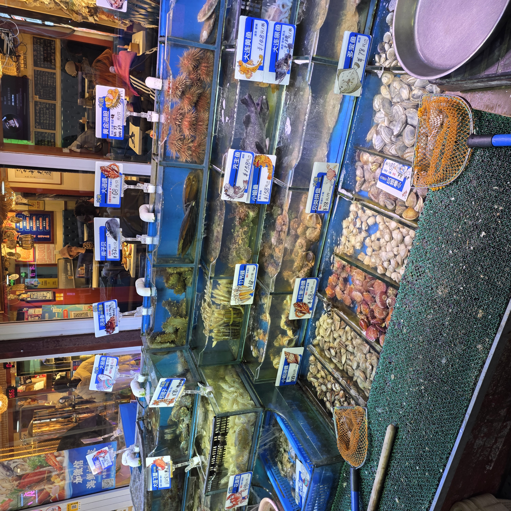
첫 타자로 고른 건 촨촨(串串·꼬치 훠궈)이었어요. 꼬치에 꿴 재료를 얼큰한 육수 냄비에 담가 익혀 먹는 방식인데, 여기에 시원한 칭다오 맥주를 곁들이니 여행 온 실감이 확 나더라고요. 냄비가 보글보글 끓는 소리부터가 식욕을 자극했습니다. 야시장에서 처음 자리 잡고 먹기에 부담 없는 메뉴라, 시작 메뉴로 추천할 만했어요.
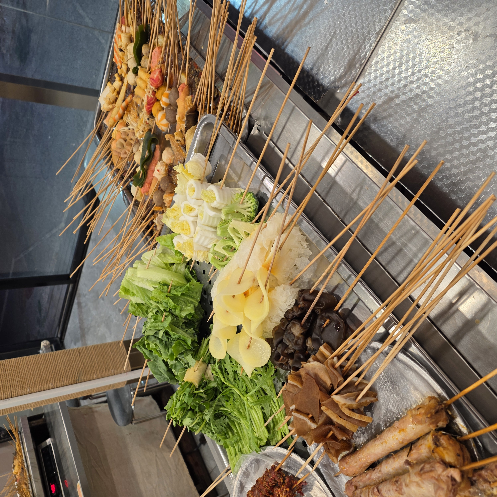
야시장 안쪽으로 더 들어가니 네온 간판이 촘촘한 골목이 나왔습니다. '空中花园(공중정원)', 소해선구이 같은 화려한 간판들이 천장까지 빼곡해서, 홍콩 영화 속 밤거리 같은 느낌이었어요. 이 골목만 걸어도 눈이 바빴습니다.
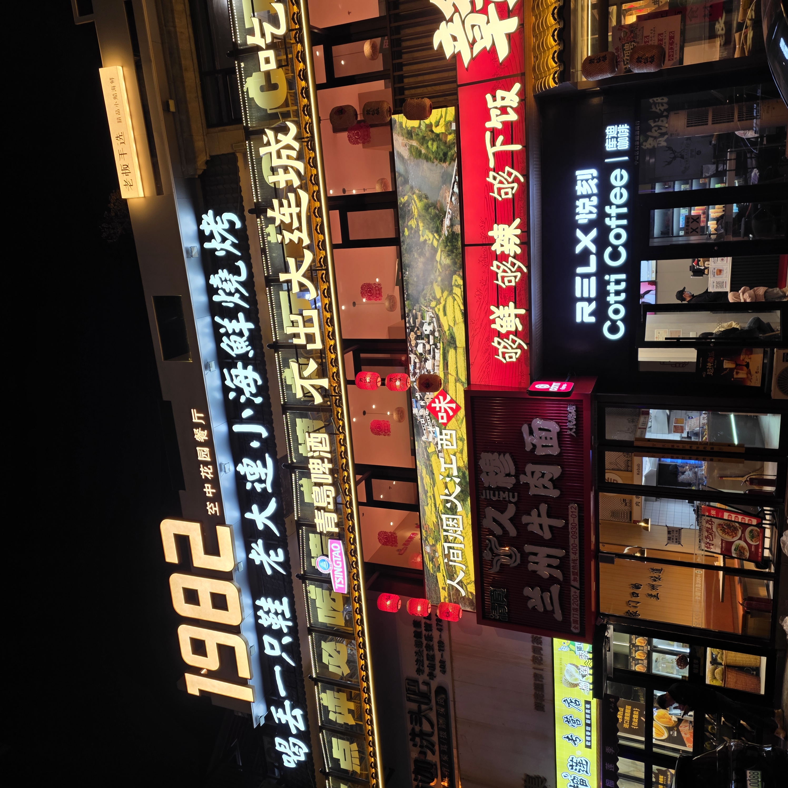
안쪽에는 실내 해선(海鲜) 매대가 줄지어 있었습니다. 각종 조개, 새우, 꽃게가 얼음 위에 진열돼 있고, 고르면 바로 쪄주거나 구워주는 방식이었어요. 앞서 입구 수조와 마찬가지로 눈으로 재료를 확인하고 주문하니, 낯선 나라에서도 신선도 걱정이 덜해 마음이 놓였습니다.
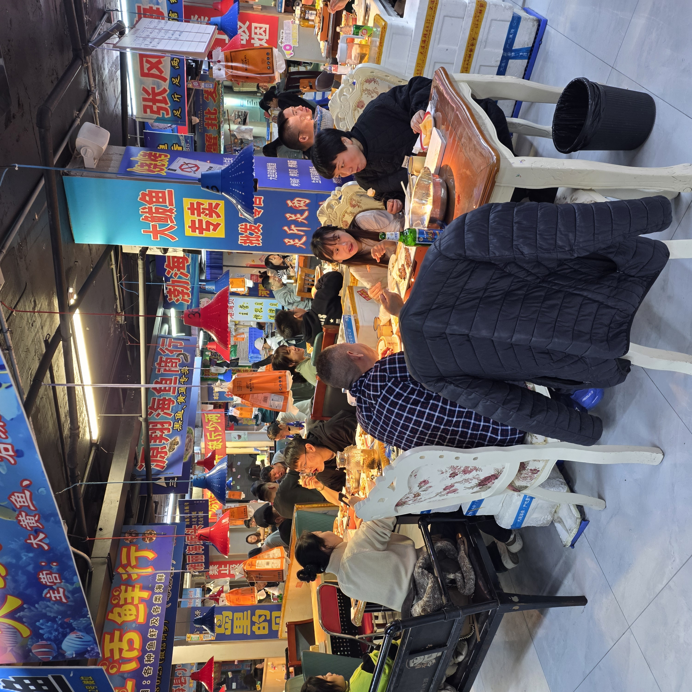
그중 제 마음을 사로잡은 건 스테인리스 볼 가득 통째로 삶아낸 홍합(海虹)이었습니다. 큼직한 홍합이 산더미처럼 담겨 나오는데, 국물까지 시원하고 짭조름해서 계속 손이 갔어요. 양이 정말 넉넉해서 둘이 먹기에도 충분했습니다. 가성비로 배를 채우기엔 이만한 게 없었어요.
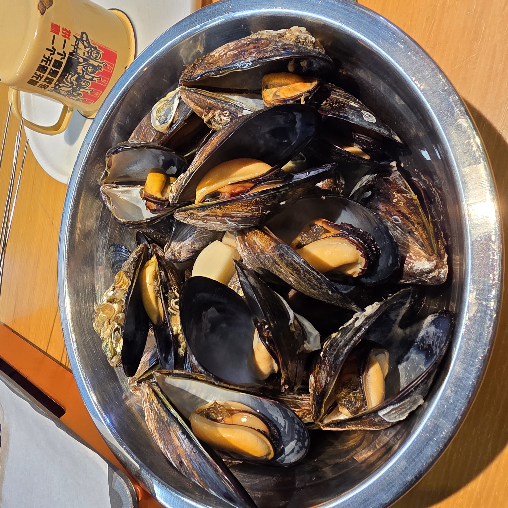
여기에 빠질 수 없는 게 양고기 꼬치(羊肉串)죠. 숯불에 노릇하게 구워 향신료를 뿌린 양꼬치는, 겉은 바삭 속은 육즙 가득이라 한 입 물자마자 감탄이 나왔습니다. 클로즈업으로 찍어둔 사진만 봐도 다시 군침이 도네요. 홍합의 담백함과 양꼬치의 진한 풍미를 번갈아 먹으니 질리지가 않았어요.
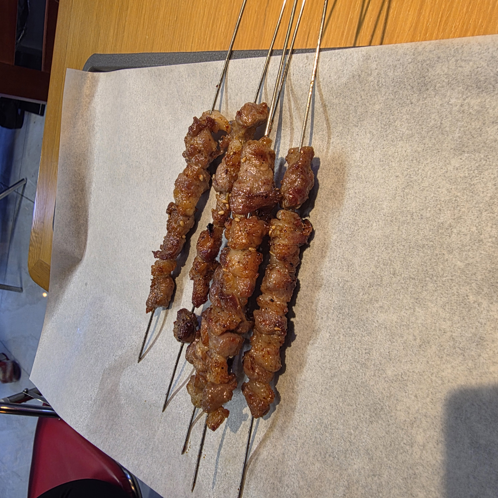
테이블 위에는 니우란산 얼궈터우(牛栏山 二锅头·중국 백주)에 홍합과 양꼬치까지 한 상이 차려졌습니다. 도수 높은 백주 한 잔에 짭짤한 홍합과 양꼬치를 번갈아 먹으니, 이게 바로 야시장의 참맛이구나 싶었어요. 시끌벅적한 분위기 속에서 먹으니 맛이 배가되더라고요. 백주는 도수가 상당하니, 다음 일정이 있다면 양 조절은 필수입니다.
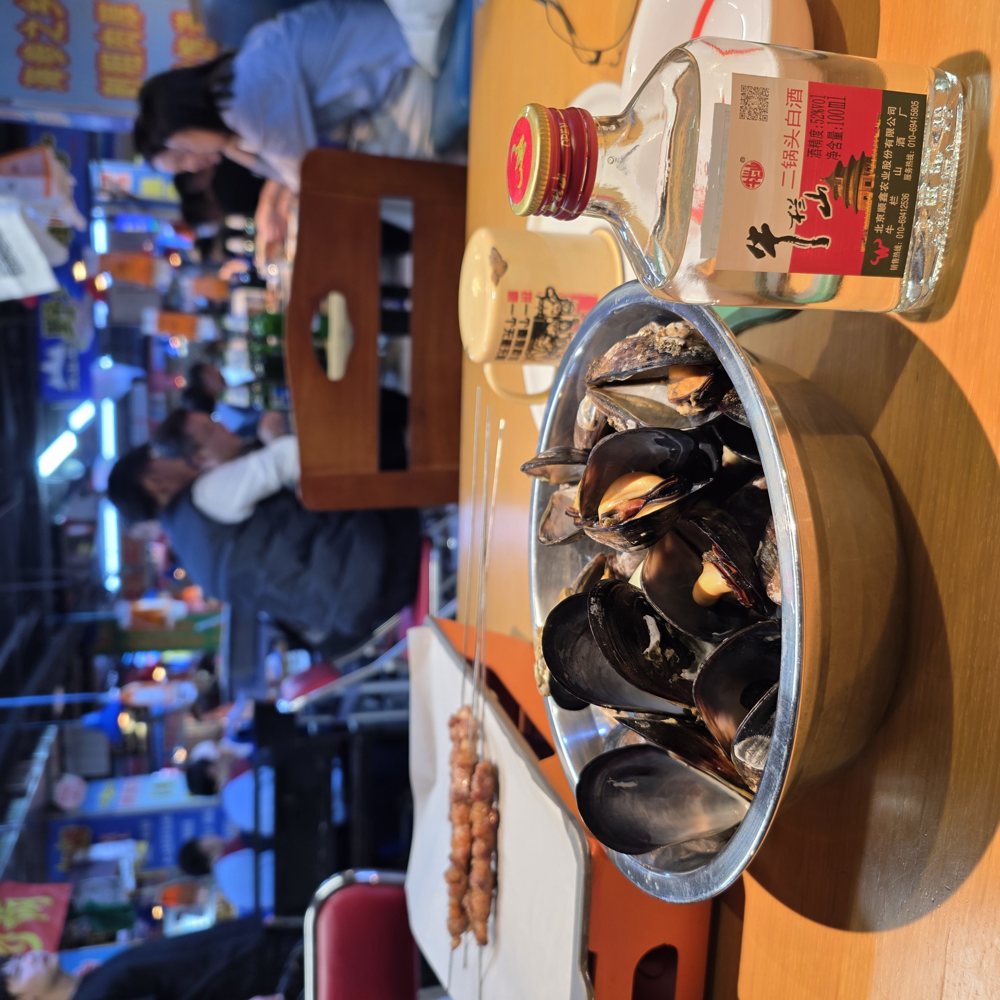
야시장에서 가장 편했던 건 결제였습니다. 대부분의 매대가 테이블이나 메뉴판에 붙은 QR코드를 스캔해 주문하고, 알리페이(支付宝)로 바로 결제하는 방식이었어요. 여권과 해외카드를 미리 등록해두니 현금 없이도 문제가 없었습니다. 지하철·버스도 같은 앱으로 QR 결제가 되니, 다롄 여행에서는 출발 전 결제앱 세팅이 정말 중요하다고 느꼈어요.
이날 양꼬치·홍합·맥주·얼궈터우·촨촨까지 다 해서 약 57.8위안이 나왔습니다. 환율에 따라 다르지만 방문 시점 기준 대략 1만 원대 초반 수준이라, 둘이 이렇게 푸짐하게 먹고 이 가격이라니 놀라웠어요. 다만 개별 메뉴의 단가는 매대마다 다르고 제가 항목별로 기록해두지 않아, 아래 표에는 총액과 이날 먹은 구성만 정직하게 적어둡니다. (환율은 수시로 변동하니 참고만 하세요.)
| 주문·결제 | 테이블/메뉴판 QR 스캔 → 알리페이(위챗페이) 결제. 여권·해외카드 사전 등록 권장 |
| 이날 먹은 것 | 양고기 꼬치 · 통삶은 홍합 · 칭다오 맥주 · 니우란산 얼궈터우 · 촨촨(꼬치 훠궈) |
| 총액(대략) | 약 57.8위안 ≈ 1만 원대 초반 (환율 변동에 따라 달라짐) |
| 현금 | 거의 필요 없었음(일부 소액만 대비 권장) |
배가 부를 대로 불렀는데도, 숙소로 돌아오는 길에 군밤을 한 봉지 사 왔습니다. 결국 방에서 흑맥주에 따끈한 군밤으로 하루를 마무리했어요. 창밖 다롄 밤거리를 내다보며 오늘 하루를 곱씹으니, 이만한 야식이 없더라고요. 동방수성의 화사한 운하, 갈매기와 노을, 시끌벅적한 야시장까지 — 하루에 이렇게 다른 장면을 담을 수 있다는 게 다롄 여행의 매력이구나 싶었습니다.
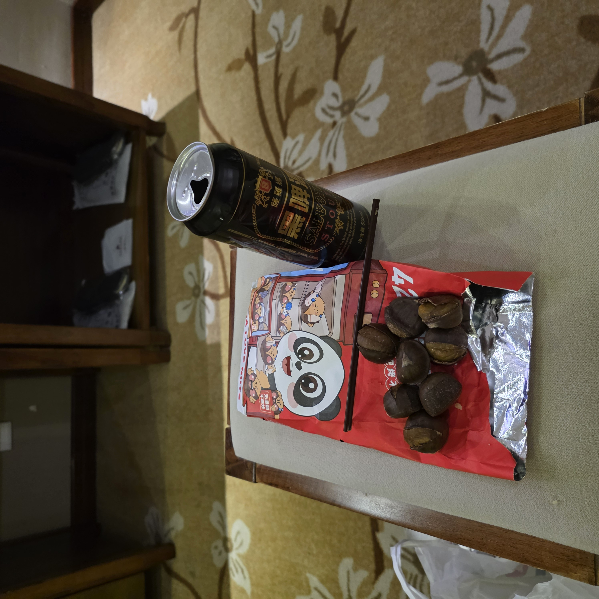
이 첫날 오후 코스는 사진 찍기 좋아하는 분, 로컬 야시장 먹거리를 즐기는 분, 아이와 함께하는 가족에게 특히 잘 맞았습니다. 동방수성은 걷고 보고 사진 찍는 재미가 확실하고, 해변 데크의 갈매기 먹이주기는 아이들이 좋아하며, 라오제 야시장은 해산물을 좋아하는 사람에게는 그야말로 천국이에요. '유럽풍 → 바다 → 야시장'을 한나절에 묶는 압축 코스라, 다롄 첫날 방향을 못 정했다면 참고할 만합니다.
솔직하게 감안할 점도 남겨둘게요. ① 10월 다롄의 바닷바람은 해가 지면 꽤 찹니다. 서울보다 2~3도 낮고 일교차가 커서, 해변·야시장 밤 나들이엔 바람막이나 겉옷이 필요했어요. ② 결제앱(알리페이·위챗페이) 세팅은 사실상 필수입니다. 안 되어 있으면 교통·야시장 모두 불편할 수 있어요. ③ 동방수성 곤돌라 요금, 야시장 개별 메뉴 단가, 두 곳의 정확한 교통편은 제가 확인하지 못했습니다. 예산과 동선을 촘촘히 짜야 하는 분이라면 방문 전 지도앱·현장 안내로 한 번 더 확인하세요. ④ 활어·해산물은 그날 시세라, 주문 전 가격을 물어보고 정하는 게 마음 편합니다.
| 동방수성은 입장료가 있나요? | 운하변 산책은 자유롭게 둘러볼 수 있었습니다. 다만 곤돌라 탑승 등 일부 체험이 유료인지·요금이 얼마인지는 직접 타보지 않아 확인하지 못했어요. 요금·운영시간은 변동되니 현장·공식 안내로 확인하세요. |
| 동방수성과 라오제 야시장은 어떻게 가나요? | 저는 다롄 시내 대중교통(지하철·버스, QR 결제)으로 이동했어요. 다만 정확한 역·노선·도보 시간은 기록해두지 않아 단정하지 않겠습니다. 방문 전 지도앱에서 그날 위치 기준으로 확인하세요. 동방수성→해변 데크는 도보로 이어졌습니다. |
| 야시장에서 현금이 꼭 필요한가요? | 대부분 QR(알리페이·위챗페이) 결제가 됐습니다. 여권·해외카드를 미리 등록해두면 현금 없이도 충분했어요. 소액 현금은 비상용으로만 챙기면 됩니다. |
| 해산물·먹거리 값은 얼마나 하나요? | 활어는 그날 시세로 팔고 매대마다 다릅니다. 저는 양꼬치·홍합·맥주·얼궈터우·촨촨을 합쳐 약 57.8위안(1만 원대 초반)이었어요. 개별 단가는 기록하지 못했고, 환율은 수시로 변동합니다. |
| 10월 밤에 옷차림은 어떻게 하나요? | 다롄은 바닷바람이 차서, 해가 지면 체감온도가 뚝 떨어집니다. 해변·야시장 밤 나들이엔 바람막이나 겉옷을 챙기는 게 좋았어요. |
| 아이와 함께 가도 괜찮을까요? | 해변 데크의 갈매기 먹이주기는 아이들이 특히 좋아했습니다. 동방수성도 걷기 편해 가족 산책에 무난했어요. 다만 야시장은 인파가 많고 늦은 시간이라 아이 동선은 챙기는 게 좋습니다. |
다음 편(③) 예고 — 다음 편에서는 20세기 초 러시아식 건축이 늘어선 러시아거리(俄罗斯风情街)와 골목을 걷습니다. 이국적인 다롄의 또 다른 얼굴, 이어서 만나요.
완료